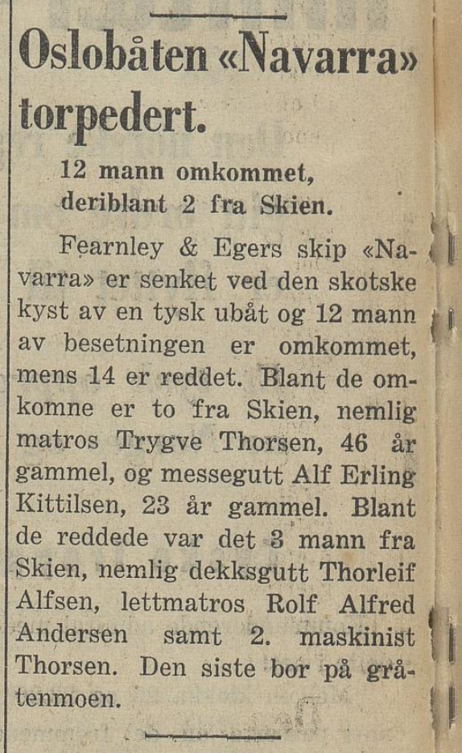

Forord
Det hele startet en vårdag i 2014. Jeg var 23 år og reiste til Marinemuseet i Horten. Jeg hadde lest på nett at de hadde gode utstillinger knyttet til krigsseilerhistorien, og jeg var nysgjerrig — ikke mer enn det.
Jeg gikk gjennom museet avdeling for avdeling, så på utstillingene, leste plakatene. Til slutt kom jeg til avdelingen som omhandlet handelsflåten og de norske sjøfolkene under krigen. Det var stille i museet den dagen. Ikke mange folk.
Så ble jeg stående foran et bilde.
Det var et fotografi av jageren Svenner i det den ble torpedert utenfor Normandie på D-dagen. Noe i meg reagerte på en måte jeg ikke helt forsto. Det var ikke bare interesse — det var noe som føltes kjent. Nærmest som et flashback til noe jeg aldri selv hadde opplevd. Jeg hadde sikkert hørt navnet Svenner før, i en eller annen sammenheng hjemme, men bestefar hadde aldri fortalt stort.
Jeg ble stående der foran bildet da jeg merket at en av de ansatte på museet hadde stilt seg ved siden av meg.
«Hei, er det noe du lurer på så må du bare si ifra.»
«Ja — bestefar var på den båten, tror jeg.»
«Okei. Hva het han?»
«Thorleif Alfsen.»
«Fra hvor?»
«Skien.»
«Vent litt.»
Han forsvant inn i museet. Det føltes som en evighet. Jeg ble stående foran bildet av Svenner og lurte på hva jeg hadde satt i gang. Så kom han tilbake. I hendene hadde han dokumenter — kopier av tjenestepapirer, mønstringslogger, datoer, skip, havner. Alt sammen. Det hadde ligget i katakombene på museet hele tiden, gjemt fra dagslyset.
Det var som å få overlevert den første ledetråden i et mysterium.
Fra den dagen begynte jeg å nøste. Det har tatt over ti år. Tråd for tråd, kilde for kilde, skip for skip. Avisarkiver fra 1940 der bestefarens navn står blant de overlevende. Britiske registreringskort med håndskrevne notater. Konvoilogger som viser nøyaktig hvor han var hver eneste dag gjennom fem år med krig. Sjøforklaringer skrevet etter hukommelsen fordi alt gikk ned med skipene.
Vi visste det store bildet. Familien hadde lest avisene opp gjennom årene, og bestefar hadde fortalt noe — at han ble torpedert, at han var på Svenner på D-dagen. Men det var omtrent det. De brede strekene, ikke detaljene.
Det jeg fant i løpet av disse årene var noe annet. Noe dypere. Konvoilogger som viser at han krysset Atlanterhavet gang etter gang mens halvparten av skipene aldri kom frem. Mønstringslogger som avslører at han mønstret på Navarra sammen med to kamerater fra Follestad — Trygve og Alf — og at begge døde i torpederingen 21 dager senere. Britiske registreringskort som viser at han rømte fra handelsflåten for å melde seg til Marinen, at han ble avvist som for ung, men fikk det til likevel. At fire av skipene han seilte på ble senket under krigen. At han hang etter en line i iskaldt vann utenfor Normandie på D-dagen, ble slept etter en britisk jager, måtte slippe taket, og ble plukket opp av en amerikansk ubåtjager tre timer senere.
At han ikke kunne svømme. Gjennom hele krigen.
Jeg tror ikke engang bestemor Evelyn kjente hele denne historien. Ikke på det nivået den finnes i kildene. Krigsseilerene var ikke kjent for å snakke om det de hadde opplevd. De kom hjem, de gikk på jobb, de levde videre. Thorleif begynte på Hydro i 1948 og ble der i 36 år. Medaljen kom i posten.
Denne fortellingen er for ham, og for alle som aldri fikk høre hva han gjennomlevde. Alt som står her er dokumentert. Hver dato, hvert skip, hver konvoi, hver havn. Ingenting er diktet opp. Det trengs ikke.
Historien er rå nok som den er.
— Pål Mattias Knutsen, 2026
Follestad-gutten
Thorleif Alfsen ble født den 9. april 1923 og vokste opp i Øvre Elvegate 24 på Follestad, like ved elva i Skien. Faren het Alf, moren Borghild. Det var et arbeiderstrøk der elva og bryggene hadde vært livsgrunnlaget i generasjoner. «Det er elva vi lever av!» var et fast uttrykk blant folk på Follestad. De voksne levde av den. Ungdommen levde for den og ved den. Noen var sjøfolk, men langt flere var havnearbeidere, fløtere eller stuere.
Men for en gutt som Thorleif var det sjøen som lokket. I likhet med mange follestadgutter dro han til sjøs som ung gutt. 16 år gammel, i mai 1939, mønstret han på sitt første skip: Fred Olsens dampskip Brisk, en 1.594-tonner bygget ved Akers Mek. Verksted i 1923. Krigen i Europa var ennå bare skyer i horisonten. Norge var nøytralt. Sjøen var arbeid.
Etter noen måneder på Brisk tok Thorleif hyre på stykkgodsfartøyet Navarra, tilhørende Fearnley & Eger i Oslo. Han mønstret på i Skiens byfjord den 16. mars 1940 — han var fortsatt bare 16 år. Med seg om bord hadde han to andre fra Follestad: matrosen Trygve Thorsen, 46 år gammel, nabo fra Øvre Elvegate — og messegutten Alf Erling Kittilsen, 23 år, kamerat.
- Skip
- D/S Navarra
- Tonnasje
- 2.118 brt / 3.500 tdw
- Bygget
- 1921, Sunderland, England
- Reder
- Fearnley & Eger, Oslo
- Kaptein
- Lorentz Ø. Tangen
- Besetning
- 26 mann (inkludert 3 passasjerer)
For den unge dekksgutten fra Follestad var dette starten på noe han ikke kunne forestille seg rekkevidden av. Han hadde ikke fylt 17 år. Han kunne ikke svømme.
Ferden gikk mot Bergen, og derfra over havet i konvoi til England. Faren hans, Alf, og en onkel var om bord på et annet skip i konvoien — et skip som ble torpedert underveis. Thorleif visste ikke om de hadde overlevd da Navarra satte kursen vestover.
I slutten av mars 1940 sluttet Navarra seg til Convoy HN 21 fra Norge mot Swansea i Wales. Der lastet de 3.000 tonn kull for returen til Oslo. Ruten gikk via Kirkwall på Orknøyene, der de skulle slutte seg til en ny konvoi hjem til Norge.
Norge var nøytralt. Navarra seilte med alle lys tent og de norske flaggene malt på skrogsidene, godt synlige for alle — for å vise at dette var et nøytralt skip.
Det hjalp ikke.
Torpedoen i mørket
Natten til den 6. april 1940. Posisjon 59°00' nord, 04°00' vest — omtrent 30 nautiske mil nordvest av Skottland. Klokken var halv tre om morgenen britisk tid. Sjøen var urolig, været ruskete.
Thorleif hadde nattvakt. Han sto til rors — ved rattet, ansvarlig for kursen. 24-04-vakta, midnatt til fire om morgenen. Det mørkeste skiftet. Sammen med ham var førstestyrmann Nils Jørgen Nilssen.
I mørket, 300 meter unna, nærmet en torpedo seg. Den tyske ubåten U-59, under kommando av Kapitänleutnant Harald Jürst, hadde funnet dem. Det spilte ingen rolle at Navarra var opplyst. Det spilte ingen rolle at det norske flagget hang synlig på skrogsiden. U-59 hadde allerede angrepet flere norske skip de foregående månedene — Glitrefjell, Touraine. Nøytraliteten betydde ingenting.
Thorleif så noe i vannet. En bevegelse, et skumspor.
«Nils, forut!»
Thorleif Alfsen, VG 05.05.1981
Bare to ord. Så smalt det.
Torpedoen traff styrbord side ved luke 3. Eksplosjonen rev gjennom skipet. Navarra begynte å synke umiddelbart. Syv minutter — det var alt de fikk.
To livbåter ble forsøkt satt på vannet. Den ene kom seg ut. Den andre kantret i den grove sjøen. Kaptein Tangen, førstestyrmann Nilssen, andrestyrmann Jensen og maskinsjef Backe — alle gikk ned med den kantrede livbåten. Med dem fulgte to av passasjerene.
Seks mann ble trolig drept i selve eksplosjonen. Blant de omkomne var Trygve Thorsen og Alf Erling Kittilsen. Naboen og kameraten fra Øvre Elvegate. De som hadde mønstret på sammen med ham i Skiens byfjord bare 21 dager tidligere.
Thorleif kom seg i den andre livbåten. Han var 16 år gammel. Han kunne ikke svømme.
I livbåten satt de som var igjen. Fjorten av tjueseks. Stormsjøen slo over dem. Regnet pisket. Ingen visste om hjelp ville komme. U-59 dukket opp igjen ved overflaten. Ubåten nærmet seg livbåten til bare 10–15 meters avstand. Lyskasterne ble tent og rettet mot de skipbrudne. I det skarpe lyset kunne de se ansiktene på dem som sto på ubåtens dekk.
Ubåten ble der i en halvtime. Så seilte den bort. Uten å hjelpe.
De drev i ni timer. Ni timer i en åpen livbåt i Nordsjøen i april, i storm og regn. To av mennene hadde benskader. De hadde ingen motor, ikke nok klær, ingen varme.
Da det endelig lysnet, ble de oppdaget av et britisk patruljefly. Flyet tilkalte det finske dampskipet Atlas, som var i nærheten. Finnene tok dem opp og brakte dem til Kirkwall på Orknøyene.
De ble satt i land lørdag ettermiddag den 6. april. Kirkwall var en militærby på høyberedskap. Ved Stenness, noen kilometer unna, bar landskapet fortsatt sporene etter Luftwaffe-raidet tre uker tidligere — hundre og tjue sprengbomber og fem hundre brannbomber over Bridge of Waithe. James Isbisters hus var ødelagt. Bombekratere lå i jordene rundt gårdene. Hundrevis av folk hadde besøkt stedet søndagen etter, til fots og på sykkel. Sporene var en synlig del av landskapet Thorleif ankom til.
Mandag den 8. april gjenopptok Luftwaffe bombingen over Scapa Flow. Tolv bombefly den 2. april hadde fått hele sperresystemet til å åpne ild — en torden som ble hørt i Lerwick på Shetland, hundre og tjuefem miles unna. Nå kom de igjen.
Tirsdag den 9. april fylte Thorleif 17 år. Samme dag invaderte Tyskland Norge. Nyheten nådde Kirkwall. Hjemlandet var borte.

En liten notis i Porsgrunn Dagblad, noen få linjer. Samme avis, samme dag, er fylt med nyheter om noe mye større: Tyskland har invadert Norge. Krigen som Thorleif allerede hadde smakt på, hadde nådd hjem.
Porsgrunn Dagblad, 9. april 1940
Onsdag den 10. april angrep seksti bombefly Scapa Flow — det tyngste raidet under hele krigen. Fem ganger så mange fly som i mars. Hele sperresystemet svarte — alle luftvernkanoner på land og til sjøs koordinerte ilden. Kirkwall lå noen få miles fra Scapa Flow. Under mars-raidet hadde folk ignorert sirenene og strømmet ut i gatene for å se. Tordenen fra det tunge artilleriet ristet husene og klirret i vinduene. Bakken skalv. Over den dype dunken hylte lettere skyts. Mot himmelen klatret linjer av lyskuler. Hvert kanonskudd lyste opp området i rødt, som karmosinrød lyn.
Fra Hatston — marineflygstasjonen én mile fra Kirkwall sentrum — tok Skua-fly av for å senke den tyske krysseren Königsberg i Bergen. Flyene tok av og landet rett ved byen. Noen av dem kom ikke tilbake.
Thorleif var der. Han hadde overlevd ni timer i åpen livbåt, mistet to fra Follestad, fylt 17 år, fått vite at Norge var invadert. Nå dunket bombene i brystkassen.
Niende april
Den 9. april var Thorleifs dato.
Han ble født den 9. april 1923. Sytten år senere, den 9. april 1940, fylte han 17 på Orknøyene — tre dager etter at skipet hans var blitt torpedert under ham. Samme dag invaderte Tyskland Norge. Det ble ingen bursdagsfeiring.
Men konsulen i Kirkwall hadde en 16-åring som hadde mistet skipet sitt. Han måtte plasseres. Et norsk skip var på vei inn — Topdalsfjord, tilhørende Den Norske Amerikalinje. Papirene ble skrevet den 9. april. Thorleif ble tildelt skipet.
- Skip
- D/S Topdalsfjord
- Tonnasje
- 4.271 brt / 6.310 tdw
- Reder
- Den Norske Amerikalinje, Oslo
- Kaptein
- Karl A. Kristensen
- Stilling
- Jungmann
Men Topdalsfjord var ennå til sjøs. Skipet hadde vært gjennom sitt eget drama. Det hadde seilt fra Methil Roads i Convoy ON 25 — en stor konvoi bundet for Norge med over førti skip. De skulle til Trondheim, Bergen, Oslo. Hjem.
Men den 8. april kom ordren fra det britiske admiralitetet: Snu. Konvoien ble tilbakekalt. Tyske krigsskip var observert i farvannene. I kaoset som fulgte brøt over tjue skip ut av konvoien i løpet av natten. Noen ble kapret av tyskerne. Noen forsvant.
Topdalsfjord klarte seg. Den 12. april la skipet til kai i Kirkwall, tilbake fra den oppløste konvoien. Thorleif gikk om bord. En gutt som nettopp hadde mistet to fra Follestad og overlevd ni timer i en åpen livbåt, mønstret på et skip som nettopp hadde blitt snudd fra en konvoi i oppløsning. Fedrelandet hans var invadert, og bombene falt over øyene der han sto.
I to døgn ventet de. Så ble kursen lagt mot Hull i England. Norge var tapt. Det ble ingen hjemreise.
De neste åtte månedene ble Thorleifs innføring i konvoikrigen. Først kystekonvoier rundt Storbritannia. I slutten av juni seilte de vestover med Convoy OA 175. Under overfarten ble to skip i konvoien torpedert — det britiske Zarian og det nederlandske Amstelland. Eskorten slapp dypvannsbomber. Topdalsfjord kom gjennom. Den 14. juli 1940 ankom de Hampton Roads i Virginia.
Thorleif, 17 år gammel, fra Øvre Elvegate på Follestad, sto på dekket og så Amerika for første gang.
Høsten 1940 ble rutinen satt: over Atlanterhavet med last, tilbake i konvoi, over igjen. Skipene gikk i flokk for beskyttelse. U-båtene jaktet i flokk for å drepe dem.
I oktober seilte de med Convoy OB 228 fra Liverpool. Under overfarten ble fire skip senket rundt dem. Blant dem var det norske dampskipet Dokka — torpedert av U-93. Akterenden ble sprengt i filler og skipet sank vertikalt på under ett minutt. Ti mann omkom. U-båten dukket opp og lyste på de overlevende — samme oppførsel som U-59 hadde vist overfor Thorleif seks måneder tidligere.
I november seilte de med Convoy HX 85 fra Halifax til Port Talbot i Wales, lastet med jernmalm. Men konvoien ble snudd — lommeslagskipet Admiral Scheer herjet i Atlanterhavet. Noen dager tidligere hadde Scheer angrepet Convoy HX 84, senket eskorteskipet HMS Jervis Bay og fem handelsskip. Kaptein Fogarty Fegen på Jervis Bay fikk posthum Victoria Cross for å ha kjøpt tid til at resten av konvoien kunne flykte. HX 85 ble reorganisert og seilte til slutt fra Sydney i Cape Breton.
Topdalsfjord kom frem. Den 30. november mønstret Thorleif av. Han hadde krysset Atlanterhavet fire ganger, vært med i minst syv konvoier, og sett Amerika.
Han var fortsatt 17 år.
Skipene som forsvant
I februar 1941 mønstret Thorleif på Norse King i Liverpool. Skipet var en eldre damper på 5.701 bruttotonn, opprinnelig bygget i Seattle i 1920. Det gikk i den ruten som kostet flest liv under krigen: Atlanterhavskryssingen mellom Liverpool og Halifax.
Liverpool i 1941 var en by i krig. Havnen var Storbritannias livline til Nord-Amerika, og derfor et konstant mål for tyske bombefly.
«En gang ble byen bombet fra klokka seks på morgenen til seks om kvelden.»
Thorleif Alfsen, TA 10.04.1990
Frem og tilbake, frem og tilbake. I mars krysset han med Convoy OB 295 fra Liverpool. I dagene rundt avgang ble alle tre av Tysklands fremste U-båt-ess eliminert — Günther Prien omkom, Otto Kretschmer ble tatt til fange, Joachim Schepke ble drept. OB 295 seilte rett inn i farvannene der det hadde skjedd.
I april med den sakte konvoien SC 29 — nitten dager fra Halifax til Loch Ewe. Nitten dager i syv-åtte knop mens U-båtene patruljerte rundt dem. Det de ikke visste var at slagkrysseren HMS Hood hadde seilt ut fra Island for å gi dem fjerndekning. Tjueseks dager senere ble Hood senket av Bismarck. 1.415 av 1.418 mann omkom.
Da Norse King ankom Hull i midten av mai, var byen knapt gjenkjennelig. Fem dager tidligere hadde Luftwaffe jevnet havnen med jorden — to netter med over hundre bombefly, tjue tusen brannbomber. Femtisyv skip lå ødelagt i dokken. Nesten fire hundre mennesker var drept. Thorleif seilte inn i en havn som fortsatt brant.
Den 6. september 1941 mønstret han av i Hull. Han visste ikke at han aldri ville se Norse King igjen.
I desember 1942 seilte Norse King i Convoy ON 154. Mer enn tjue U-båter samlet seg for angrep. Skipet tok om bord opptil 164 overlevende fra andre torpederte skip. Så ble Norse King selv torpedert — to ganger. Beskutt med over hundre granater.
Ingen overlevde. Alle om bord omkom.
Thorleif hadde mønstret av femten måneder tidligere.
Bare tre uker etter Norse King gikk han om bord på tankskipet Astrell i Liverpool. Atten år gammel. Tankskipene var ubåtenes favorittmål. En torpedo i en oljetanker betydde brann.
- Skip
- M/T Astrell
- Tonnasje
- 7.595 brt / 11.730 tdw
- Type
- Motortanker (olje)
- Reder
- Prebensen & Blakstad, Risør
I oktober 1941 seilte de til Corpus Christi i Texas. Fra Follestad til Texas med olje i tankene og U-båter i havet. Derfra gjennom Gulfstatene, opp til Halifax, og tilbake over Atlanterhavet. Jul i Southampton.
Så kom januar 1942. Den 15. januar gikk Astrell på grunn ved Barra Head i Ytre Hebridene. SOS ble sendt. De kom seg løs, returnerte til Oban, ble tvunget tilbake av storm, prøvde igjen — og gikk på grunn enda en gang. To grunnstøtinger og en storm på ni dager.
Den 29. april 1942 mønstret han av i Grangemouth. Seks måneder senere ble Astrell torpedert ved Curaçao. Nok et skip borte.
Rømlingen
Den 26. mai 1942 mønstret Thorleif på motorskipet Emma Bakke i Liverpool. Han var nå matros — fullverdig dekksmann, nitten år gammel.
To dager senere, den 28. mai 1942, ble Thorleif rapportert savnet fra skipet.
«Rep. missing from ‘Emma Bakke’ since 28/5-42»
Britisk registreringskort, håndskrevet med grønn blekk
Han hadde stukket av.
Vi vet ikke nøyaktig hva han gjorde eller hvor han dro. Vi vet at det britiske registreringskortet, i feltet for militær trening, har en enkel notis: «too young».
For ung. Han hadde seilt i to år. Han hadde blitt torpedert. Han hadde mistet to naboer. Han hadde krysset Atlanterhavet mer enn ti ganger mens skipene rundt ham ble senket. Men han var for ung til å slåss tilbake.
1942 var det verste året i Slaget om Atlanterhavet. For sjøfolkene om bord på handelsskipene var det ingen mulighet til å forsvare seg. De bare seilte, og håpet.
Thorleif var lei av å håpe.
Han kom tilbake. Han fullførte sommeren på skipet. Konvoiene fortsatte. Liverpool til New York, tilbake, over igjen.
«Vi ble bombet på land og torpedert til sjøs. Ofte kom bare halve konvoien fram.»
Thorleif Alfsen, Langs Ælva, 2009
Den 16. september 1942 mønstret han av i Liverpool. For siste gang. Han var ferdig med handelsflåten.
Den 5. oktober 1942 meldte han seg til tjeneste ved Sjøforsvarets Overkommando i London.
«3/10-42 Join The Norw. Navy»
Britisk registreringskort
Dekksgutten fra Follestad var blitt marinesoldat.
Fjorten måneder
HNoMS St. Albans var ikke noe vakkert skip. Det var en gammel amerikansk destroyer — opprinnelig USS Thomas, bygget i 1918. Under norsk flagg hadde skipet eskortert Convoy PQ 15 til Murmansk og deltatt i senkningen av U-401. Da Thorleif kom om bord i november 1942 var oppgaven konvoieskorte i Nord-Atlanteren.
De neste fjorten månedene seilte han i en ubrutt rekke av konvoieskorter. HX-konvoiene østover, ON-konvoiene vestover, SC-konvoiene, de sakte. I løpet av fjorten måneder eskorterte St. Albans minst tjuefem konvoier.
Våren 1943 snudde krigen i Atlanterhavet. I mai — «Black May» — mistet den tyske marinen 43 ubåter på en måned. Thorleif seilte gjennom dette vendepunktet. Det betydde ikke at det var trygt. Men oddsen var i ferd med å snu.
Mot slutten av 1943 ble St. Albans trukket ut av tjeneste. Skipet var gammelt og slitt — tjuefem år på havet. Den 17. januar 1944 mønstret Thorleif av. Fjorten måneder. Mer enn tjuefem konvoieskorter.
Han ble sendt tilbake til Marinens depot i Devonport. Han ventet på nytt skip.
Han trengte ikke vente lenge.
Svenner
Den 8. mars 1944 mønstret Thorleif om bord på jageren HNoMS Svenner. Det var samme dag som skipet offisielt ble overført til Den Norske Marine. Thorleif var der fra dag én.
- Skip
- HNoMS Svenner (ex-HMS Shark)
- Type
- S-klasse destroyer
- Tonnasje
- 1.800 tonn
- Bygget
- 1943, Scott's of Greenock
- Bestykking
- 4 × 4,7" kanoner, 8 torpedorør
- Besetning
- ~230 mann
- Kaptein
- Kapteinløytnant Tore Holthe
Svenner var alt St. Albans ikke var. Splinterny. Marinens nyeste og mest moderne fartøy. Thorleif var matros og kanomann om bord.
April og mai var fylt med øvelser. Først ved Scapa Flow — den store ankringsplassen på Orknøyene der vraket av HMS Royal Oak fortsatt lå på bunnen etter torpederingen i 1939. Så sørover til Portsmouth, der invasjonsflåten samlet seg. Mens de øvde, gjennomførte Luftwaffe sine aller siste bombeangrep mot England. Den 29. mai falt de siste bombene over Portsmouth — en uke før Svenner seilte mot Normandie. Tyske rekognoseringsfly hadde sett flåten. De visste at noe var i gjære.
Svenner var nominert for Force S — ildstøtte under angrepet på Sword Beach i Normandie. Sammen med søsterskipet Stord ble de tildelt en æresposisjon: de skulle gå i spissen for hele den østlige bombardementsstyrken.
Den 2. juni seilte flåten ut. Først denne dagen fikk Holthe fortelle besetningen hvor de skulle. De fleste hadde vært uten forbindelse med hjemlandet i årevis. Det eneste de brydde seg om var å vinne krigen, så de kunne komme hjem.
Invasjonen ble utsatt i 24 timer på grunn av dårlig vær. I to døgn krysset de frem og tilbake i Den engelske kanal uten å bli oppdaget.
Ved midnatt ga Holthe ordre til klart skip. Stord i teten. Svenner som nummer to. Sjøen var full av propellyd. Himmelen var full av flydur. Ved daggry så de bombeeksplosjoner på kysten forut, og en rød lysning på himmelen.
Det var den 6. juni 1944.
D-dagen
Klokken 05:30 ankret slagskipene og krysserne opp utenfor Sword Beach. Fly la ut et røkteppe mot de tyske batteriene i Le Havre. Svenner stoppet vest for de tunge skipene for å vente på minesveiperne.
Thorleif sto på fordekket.
På den andre siden av røkteppet nærmet tre tyske torpedobåter seg under løytnant Heinrich Hoffmann. Foran ham lå den største invasjonsflåten historien noen gang hadde sett. Han sendte sytten torpedoer inn i massen av skip.
«Jeg sto på fordekket og så tre torpedoer komme mot oss. De to første gikk akterut, men den tredje traff midtskips. Kjelerommet eksploderte og fartøyet brakk i to.»
Thorleif Alfsen, Langs Ælva, 2009
Torpedoen hadde passert tvers gjennom hele den allierte flåtestyrken — mellom slagskipene Warspite og Ramillies, forbi kommandoskipet Largs. Svenner var det eneste skipet den traff.
Eksplosjonen ble forsterket av at skipets kjele gikk i luften. Svenner brakk midtskips på under to minutter. Livbåtene var knust. Baugen og akterenden reiste seg som en V mot himmelen mens midtskipet sto fast på bunnen.
Thorleif hoppet ikke med det samme. Det var grunt vann. Han håpet skipet ville bli stående oppreist. Men det gikk ikke.
Thorleif Alfsen, som ikke kunne svømme, hoppet på sjøen iført en redningsvest.
Alle skip hadde fått streng beskjed: Ikke stans for overlevende. Men kaptein John Gower på HMS Swift lot fartøyet seile uendelig langsomt, og fisket opp folk.
En soldat kastet ut en line. Thorleif grep tak. Vannet var kaldt. Swift begynte å seile inn mot Normandie med ham hengende på slep. Farten dro i kroppen. Det ble for tungt.
Han måtte slippe.
I tre til fire timer lå han i sjøen utenfor Sword Beach mens invasjonen pågikk rundt ham. Til slutt ble han plukket opp av en amerikansk ubåtjager.
33 nordmenn, én danske og én brite omkom. HNoMS Svenner ble det første allierte krigsskipet som ble senket på D-dagen. Av en flåtestyrke på 5.333 skip var det ett av bare to større krigsskip som gikk tapt invasjonsdagen.
Svenner hadde vært i tjeneste i nøyaktig 90 dager. Thorleif hadde vært om bord i alle 90. Skipet hadde ikke fått avfyre ett eneste skudd.
Hjem
Etter D-dagen ble Thorleif brakt tilbake til England. Han ble sendt til Marinens depot i Devonport. Denne gangen ble han der i fem måneder. Det er den lengste perioden under hele krigen at Thorleif var på land.
I november 1944 fikk han nytt skip — jageren HNoMS Arendal, stasjonert i Harwich med 16. jagerflotilje. Eskorte og patrulje i Nordsjøen og Den engelske kanal. Trusselen var nå tyske E-båter og Seehund-miniubåter som angrep konvoiene om natten. I Harwich falt V-2-raketter over sørøst-England — supersoniske, uten forvarsel. Man hørte smellet først etter at de traff.
«Det smalt ofte rundt oss. Et skip lastet med ammunisjon ble truffet av en torpedo. Da røyken la seg, var det ikke spor igjen etter skipet. Vi hadde også lastet ammunisjon. Det kunne like gjerne vært oss.»
Thorleif Alfsen, TA 10.04.1990
Den 13. mai 1945 seilte HNoMS Arendal inn Oslofjorden. Jageren var eskorteskip for den hurtige mineleggeren HMS Apollo, som om bord hadde kronprins Olav på vei hjem til det frie Norge. Det var åtte dager etter kapitulasjonen. Oslo ventet.
Thorleif sto på dekket da de passerte øyene i fjorden og så hovedstaden åpne seg foran dem. Han hadde dratt fra Skien som 16-åring. Nå kom han hjem som 22-åring, om bord på et av krigsskipene som eskorterte landets kronprins tilbake.
Han hadde vært hjemmefra siden han var 16. I seks år hadde han seilt på åtte skip og tjenestegjort på fire marinebaser. Han hadde krysset Atlanterhavet utallige ganger. Han hadde blitt torpedert to ganger. Fire av skipene han seilte på ble senket under krigen. Han hadde sett kamerater dø. Han hadde rømt fra handelsflåten for å melde seg til marinen. Han hadde stått på fordekket og sett torpedoene komme, hoppet i sjøen, hengt etter en line, sluppet taket, og ligget i vannet i timer.
Han kunne fortsatt ikke svømme.
«Alt ble etter hvert en vane. Vi reagerte ikke så når det smalt rundt oss. Det var kanskje lettere for oss yngre enn de eldre.»
Thorleif Alfsen, TA 10.04.1990
Thorleif ble dimittert fra Marinen den 31. januar 1946. Etter noen år til på sjøen begynte han i 1948 på Norsk Hydro på Herøya. Der ble han i 36 år.
Han giftet seg med Evelyn Marie Iglebækk fra Bergen. De fikk fire barn og mange barnebarn. De bosatte seg på Klosterskogen i 25 år, og til slutt i en nybygget enebolig på Krabberødkollen på Stathelle.
Etter noen år kom det to brev i posten. Det ene inneholdt Deltakermedaljen. Det andre Krigsmedaljen. Ingen seremoni. Ingen tale. Bare brev.
Han snakket ikke mye om krigen. Det han fortalte, fortalte han til journalistene som oppsøkte ham ved jubileene. «Bare et ord da det smalt», skrev VG i 1981. «Torpedert jubilant», skrev TA i 1990. «Siste mann på ekk», skrev Varden i 2004.
I boken Langs Ælva — Minner fra Follestad og Bøleveien fra 2009 fikk han et eget avsnitt. Teksten slutter slik:
«Den 13. mai 1945 kom han tilbake til friheten og Norge. Da hadde follestadgutten opplevd og overlevd mange harde påkjenninger.»
Langs Ælva, Thorbjørn Wahlstrøm, 2009
Det var mange ganger et helvete. Men de hadde et godt kameratskap.